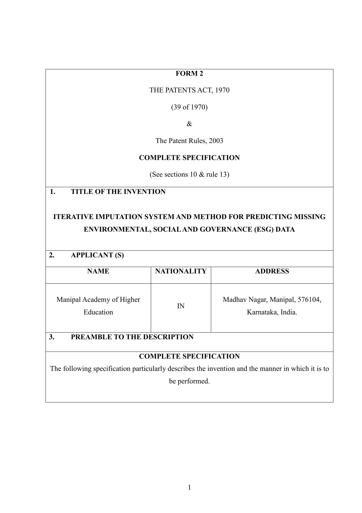

My Research Papers
A Review of AI Tools in Molecular Biology and Virology
Bhat, P. N., Balaji, S., & Shapshak, P. (2025)
Read Full Paper
Iterative Imputation System and Method for Predicting Missing Environmental, Social, and Governance (ESG) Data
Bhat, P. N
Contributors: Lopez, A., Huang, D., & Sahni, S.